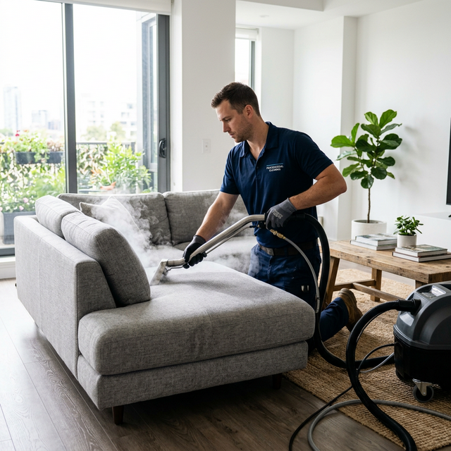

Professional Sofa Cleaning Services in Melbourne
Your sofa is the heart of your living room — where you unwind after work, binge your favourite shows, host friends, and create family memories. But beneath the surface, spills, body oils, pet dander, sweat, and millions of dust mites silently accumulate deep within the fabric fibres. Over time, this hidden build-up causes discolouration, stubborn odours, and can trigger allergies and respiratory issues.
At BABA Cleaning, our professional sofa cleaning Melbourne service uses advanced Hot Water Extraction (HWE) steam technology to penetrate deep into every fibre — reaching layers your vacuum simply can't. We lift and remove even the most set-in stains — from red wine and coffee to ink, food grease, and pet accidents — while killing bacteria and sanitising the entire surface. The result is a sofa that looks, smells, and feels like the day you bought it.


Our Complete Sofa Cleaning Process
Every sofa cleaning session begins with a hands-on inspection. We check your sofa's fabric type, identify stains, and note high-wear areas like armrests and seat edges. Then we build a custom cleaning plan for your exact sofa:
- Fabric assessment & colourfast test — We identify your sofa's material and test a hidden area to ensure colours won't bleed
- Targeted stain pre-treatment — Wine, coffee, ink, grease, and pet stains are spot-treated with professional-grade solutions at no extra cost
- Hot Water Extraction deep clean — High-pressure steam flushes out embedded dirt, dust mites, and allergens that vacuuming misses
- Cushion-by-cushion cleaning — Removable cushions are cleaned individually on all sides for complete coverage
- Antibacterial sanitisation — Eliminates bacteria, odours, and allergens for a hygienically clean sofa
- Optional Scotchgard protection — Stain-resistant coating to shield your sofa from future spills and wear
Sofas We Clean — Every Style, Every Fabric
No matter what sofa you own, our trained technicians know exactly how to clean it safely and effectively:
3-Seater & 2-Seater Sofas
The classic lounge room staple — we deep-clean every cushion, armrest, and backrest panel.
L-Shaped & Sectional Sofas
Large sectionals get full coverage — including the corner section and chaise end.
Sofa Beds & Sleeper Sofas
We clean both the seating surface and the fold-out mattress area for complete freshness.
Leather & Faux Leather
Specialised leather-safe products that clean, condition, and restore without cracking or drying.
Velvet, Linen & Microfibre
Delicate fabrics handled with low-moisture techniques to protect texture and colour.
Vintage & Antique Sofas
Gentle cleaning for heirloom pieces — we preserve the character while removing decades of grime.
Sofa Cleaning FAQ
Can you get old, set-in stains out of my sofa?
In most cases, yes. Our professional-grade pre-treatment solutions break down old wine, coffee, ink, food, and pet stains before the HWE extraction lifts them out. We'll assess stain severity during our pre-inspection and give you honest advice on expected results.
Is steam cleaning safe for leather sofas?
We don't steam-clean leather. Instead, we use specialised leather-safe cleaning products and pH-balanced conditioners that lift dirt and oils without drying, cracking, or discolouring the leather. Your sofa will look supple and refreshed.
How often should I have my sofa professionally cleaned?
We recommend every 12–18 months for a typical household. If you have pets, young children, or allergy sufferers, every 6–12 months is ideal. Regular cleaning extends the life of your sofa and keeps your home healthier.
How long does sofa cleaning take, and when can I sit on it?
A standard 3-seater takes 30–45 minutes; larger sectionals 60–90 minutes. Drying time is typically 2–4 hours depending on airflow and fabric type. We can use professional air movers to speed things up.
Do you move the sofa to clean underneath?
We focus on the upholstered surfaces of the sofa itself. If your sofa is easy to move and you'd like us to clean behind or under it, just let us know and we'll be happy to help.
Love Your Sofa Again — Book a Clean Today!
Whether it's a compact 2-seater or a sprawling family sectional, BABA Cleaning will make your sofa look and feel like new. Call now for a free, no-obligation quote.